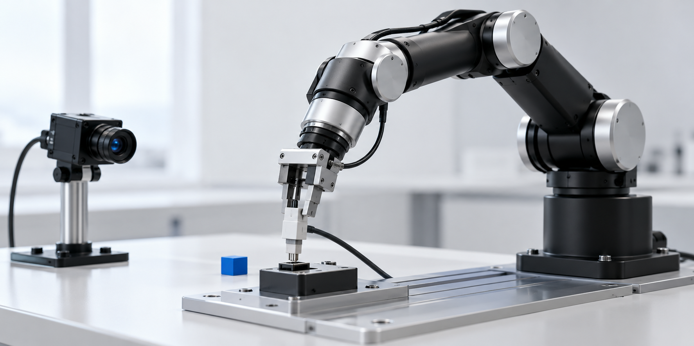
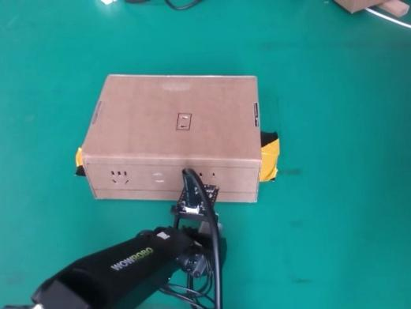
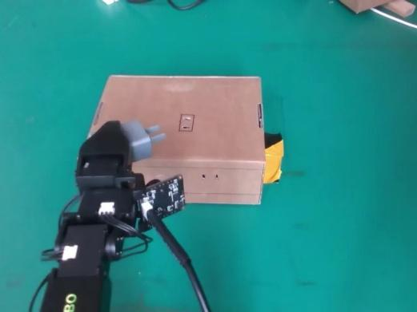
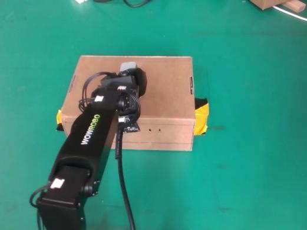

Scientific ML · 2024
Coal ash prediction
Near-infrared spectroscopy with PSO-ELM predicted coal ash composition with R² = 0.98 and RMSE = 0.79. Published with me as first author.
AI systems researcher · NTU Singapore
I'm Gao Yunzhe. I build systems that decide what belongs on-device, what needs the cloud, and how to make both work reliably in the real world.
Seeking PhD opportunities for 2027 · Singapore, GMT+8
Research portfolio
How can an intelligent system do more with less computation—without becoming less dependable?
Featured research · NTU · 2025—Present
Green-Edge-Cloud lets the edge model decide when it is confident enough to answer locally—and when a query deserves cloud-scale reasoning.
The framework uses the edge model's length-normalized sequence likelihood as an intrinsic confidence signal, removing the cost and complexity of a separate routing model.
Distilled routing-oriented chain-of-thought from Qwen2.5-72B-Instruct into Qwen2.5-1.5B-Instruct.
Built vLLM and CodeCarbon profiling, including edge idle energy during cloud offloading.
Accepted at the ICML 2026 Workshop on Efficient and Intelligent Machine Learning.
81.16%energy reduction
5.6×inference speedup
Fine-grained robot manipulation · NEU · 2024—25
I built a complete Koch v1.1 leader-follower stack: motor calibration, demonstration collection, ACT policy training, vision, and real-time deployment.

Two tasks tested the system where perception and control have to agree in milliseconds: inserting a plug and sorting objects on a conveyor.
86%plug grasp success
66%insertion success
89.3%sorting success
14–15 msYOLOv5 latency



MobileNetV2 reduced plug-task latency from 20 ms to 16 ms and enabled a 60 Hz control loop. YOLOv5 segmentation supported asynchronous conveyor sorting.
Applied intelligence
Earlier projects connect spectral sensing, industrial process data, and machine learning to decisions operators can use.
Scientific ML · 2024
Near-infrared spectroscopy with PSO-ELM predicted coal ash composition with R² = 0.98 and RMSE = 0.79. Published with me as first author.
Digital twin · 2023
ECAS matches mineral-processing equipment states against historical abnormal operating patterns using correlation-based retrieval.
Chinese software copyright · National silver award · NEU grand prize
Research output
Peer-reviewed work, software intellectual property, and awards from systems research and applied innovation.
2026
Accepted · ICML 2026 Workshop (EIML)
Y. Gao, Z. Feng, K. Mao
2024
Core Journal · Control Engineering of China
Y. Gao, J. Zou, D. Xiao
2023
Chinese computer software copyright · 2023SR1469715
K. Zhang, Y. Gao (2nd author)
2023
Chinese computer software copyright · 2023SR1421636
K. Zhang, P. Zhu, Y. Gao (3rd author)
Profile
My work centers on lightweight model deployment, efficient multimodal AI, and reliable edge-cloud collaboration. My M.Sc. dissertation is on the design and deployment of lightweight large language models for efficient, localized inference.
2025—26
M.Sc. in Computer Control and Automation
2021—25
B.E. in Automation
2025—26
2023
2024—25
2021—22
Toolkit
Python, C/C++, MATLAB, SQL, LaTeX
PyTorch, Transformers, Hugging Face, PEFT / LoRA, TRL, scikit-learn, CoT distillation, confidence-based routing
Imitation learning, ACT, ROS, MobileNetV2, YOLOv5, MuJoCo, Gazebo
vLLM, quantized inference, edge-cloud inference, CodeCarbon, energy and latency profiling, Linux, Docker, CUDA, Git
Open to PhD research opportunities for 2027